Harmonious Save Editor
A save editor for No Man's Sky on PC (Steam and GOG). Edit your traveller, ships, corvettes, bases and inventories. Keep every ship you've owned. Find places by their portal glyphs and warp there. Build in Blender and send it straight into your save.
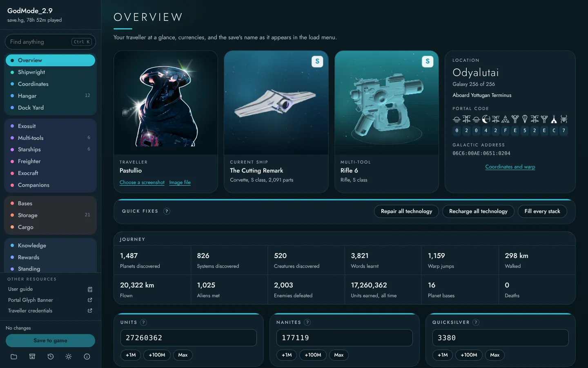
Where to begin
The sections
The editor's sidebar groups the pages the way you use them. Each one has its own page here.
Getting started
The desktop app is one small program with no installer. It finds your saves on its own and writes straight back to the game's folder.
- Download
Harmonious Save Editor.exefrom the dist folder on GitHub. Put it anywhere you like. - Run it. Windows SmartScreen warns the first time because the program isn't code-signed. Choose More info, then Run anyway.
- Pick a save. The editor lists your save slots from
%APPDATA%\HelloGames\NMS, newest first. Click one to open it. - Let the item library build. The first time, the app reads item names, icons and descriptions from your No Man's Sky install. It takes about a minute and happens once (and again after game updates).
- Make your changes on any page. The sidebar shows Unsaved changes while you have some.
- Close the game, then press Save to game at the bottom of the sidebar.
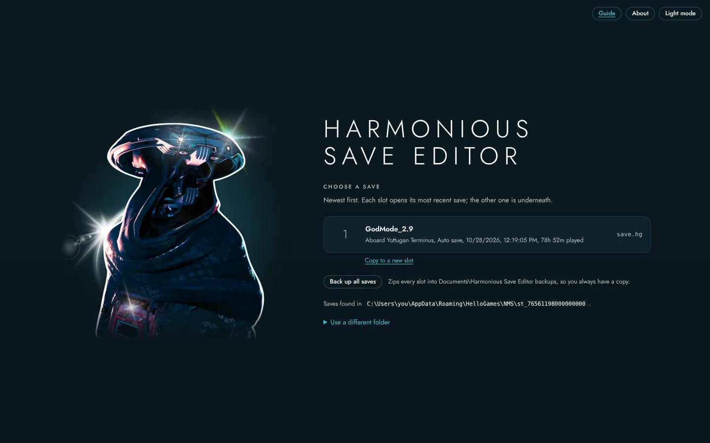
The window
- Sidebar: the save's name and play time at the top, then the find box, the sections in their groups, links to other tools, and the save button.
- Buttons at the very bottom: open the save folder, back up all saves, show backups, light or dark mode, and About (version, links and credits).
- The "?" signs beside headings and fields show a short explanation when you point at them.
Updates
When a new version is out, the app offers it once. Accept and it downloads the new version, checks it, swaps itself over and restarts, showing its progress while it works. Nothing needs reinstalling.
Your saves are safe
The editor is built never to lose data. Here's everything it does to protect your saves, and how to get an old version back.
- A backup every time you save. Before replacing a save, the app copies the current pair of files to
%LOCALAPPDATA%\HarmoniousSaveEditor\backups\<account>\<time>_saveN. The clock-arrow button at the bottom of the sidebar (Show backups) opens that folder. - Back up all saves zips every slot into
Documents\Harmonious Save Editor backups. - Checked before writing. The new save is decoded again and compared with what's in the editor. If anything differs, nothing is written.
- Nothing changes by accident. A save you open and save without edits comes out identical: key order, number spelling and special bytes are all kept.
- New saves from the game. If the game writes a newer save while the editor has one open, a card offers to open the new one. It asks first if you have unsaved edits.
- Your ships are kept too. The Dock Yard's Garage keeps a copy of every ship in every save you open, so even a deleted ship can come back.
- Private. The app only listens on your own PC (127.0.0.1) with a new random key each run, so web pages can't reach it. It closes a few seconds after its window does.
Getting an old save back
- Close No Man's Sky.
- Press Show backups and open the folder with the time you want.
- Copy both files (
saveN.hgandmf_saveN.hg) into your save folder (the folder button at the bottom of the sidebar opens it), replacing the current pair.
Overview
Your traveller at a glance: who you are, what you're flying, where you are, and what you've done.
- Traveller cards: your portrait, current ship, multi-tool and location. Give your traveller a picture with Choose a screenshot (from your in-game photos) or Image file. Click the ship or multi-tool to jump to it.
- Location: galaxy, system, portal glyphs and galactic address. Coordinates and warp takes you to the Coordinates page.
- Quick fixes for every inventory in the save at once: Repair all technology, Recharge all technology and Fill every stack.
- Journey: planets and systems discovered, creatures, words learned, warps, distance walked and flown, and more.
- Currencies: units, nanites and quicksilver. Type a number or use +1M, +100M and Max.
- Save name: how this save is named in the game's load menu.
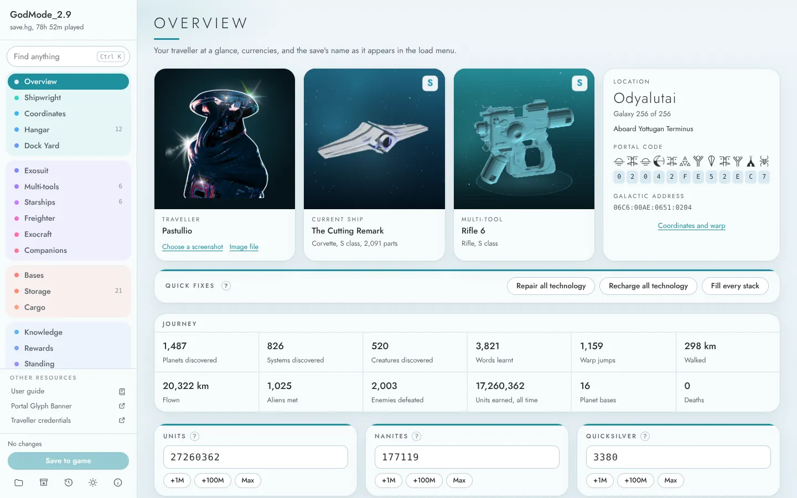
Shipwright
Corvette builds, done right: parts in the order the game reads them, checks for the mistakes that break a build, and whole builds in and out in one go.
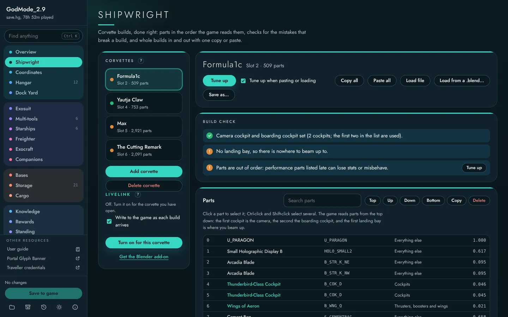
Your corvettes
The list on the left shows each corvette with its slot and part count. Add corvette makes a new one in an empty ship slot with a starter build; Delete corvette removes one.
Build check
- Cockpits: the first two in the list are the camera cockpit and the boarding cockpit.
- Landing bay: the first one is where you beam up. If it's scaled too small, beam-up won't work, and the check says so.
- Part order: performance parts listed late can lose stats or misbehave. Tune up fixes the order (TAZmd's documented priority order; cockpits and the beam-up bay stay put). Tick Tune up when pasting or loading to do it every time.
- Stacked parts: parts sitting exactly on top of an identical one, with a one-click fix.
Builds in and out
- Copy all and Paste all move a whole build between corvettes, saves or other tools such as TAZ's. Pasting replaces only the parts; the corvette keeps its name, class, inventory and owner.
- Load file and Save as… read and write builds as files.
- Load from a .blend… reads a Charon Forge corvette file from Blender. See Blender.
- Parts list: search, select (click, Ctrl+click, Shift+click), move parts Up and Down, copy or delete them.
LiveLink
Turn LiveLink on for a corvette and each time you save in Blender, the build lands in your save. Set it up on the Blender page.
Coordinates
Find a place by its portal glyphs or galactic address, see what your save knows about it, and warp there.
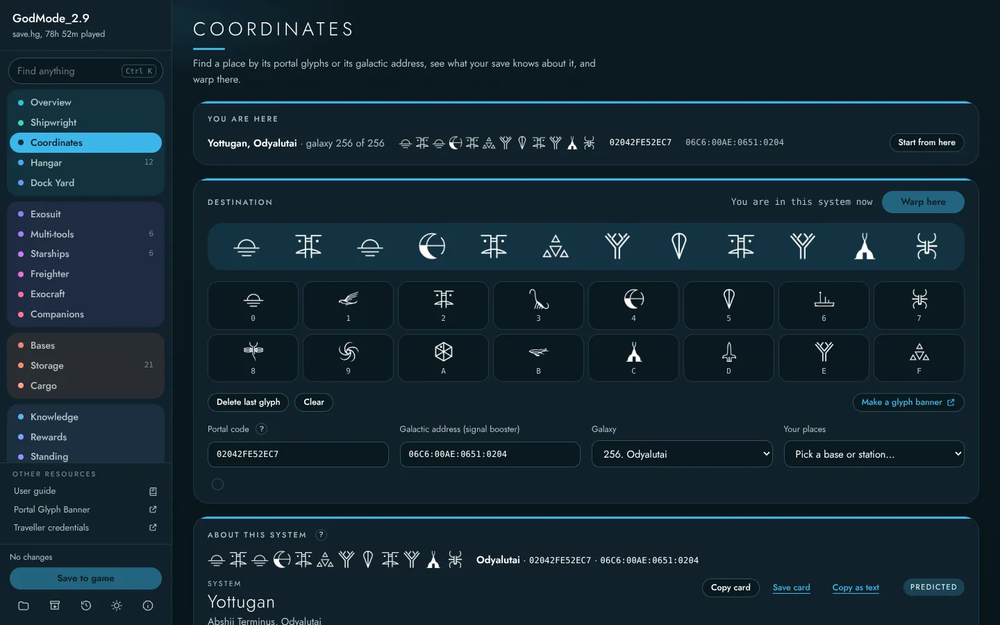
Choosing a destination
- You are here shows your galaxy, system, portal glyphs and galactic address. Start from here copies it into the destination.
- Portal glyphs: click the sixteen glyphs to type a portal code. Delete last glyph and Clear fix mistakes.
- Portal code, galactic address and galaxy fields stay in step as you type any of them. Galactic addresses are what a signal booster shows.
- Your places picks one of your bases or space stations.
- Make a glyph banner opens the Portal Glyph Banner tool with this address.
About this system
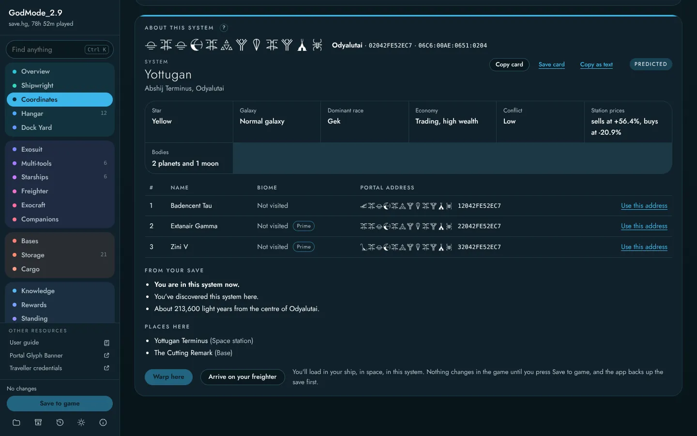
- Prediction: the system's name, region, star colour, economy, conflict and planets, worked out from the address.
- Planets: each body with its name, portal address and biome. Biomes you've seen come from your discovery records. For the rest, the biome odds show the most likely biome and its chance, from the game's own tables by star colour and galaxy type. Prime bodies (the extra ones the game adds) use their own odds.
- From your save: whether you've been here, what you've discovered, and your places in the system.
- Place card: Copy card, Save card or Copy as text to share the destination.
Warping
- Warp here puts you in your ship at the destination.
- Arrive here next to one of your bases lands you on foot beside it, ship hovering above.
- Arrive on your freighter brings the freighter to the system and puts you aboard.
Nothing changes in the game until you press Save to game; your old location is kept as your previous one.
Hangar
Your ships, corvettes and multi-tools as cover art, with real 3D models from your game.
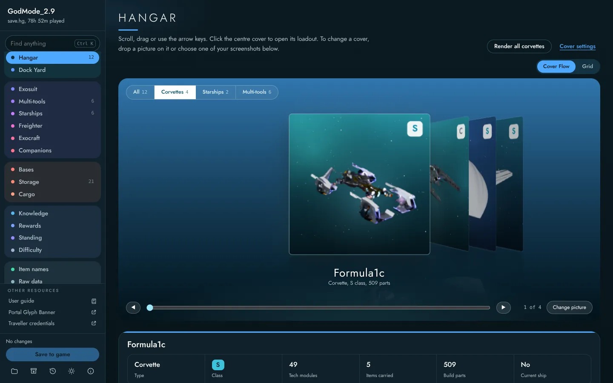
- Cover Flow: scroll, drag or use the arrow keys. Click the centre cover to open its loadout. Switch to a Grid in the top-right corner.
- Filters: All, Corvettes, Starships and Multi-tools.
- Models: ships and multi-tools are drawn from your game's own model files. Point at a cover and it spins; drag to turn it.
- Pictures: drop an image on a cover, or use Choose a screenshot or Use an image file. Change picture goes back to the model.
- Details under the covers: type, class, tech modules, items carried, build parts and whether it's your current ship. Open loadout jumps to its editor.
Corvettes
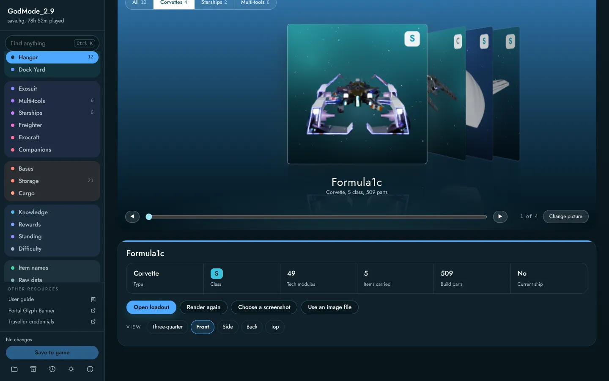
- Hologram: without Blender, a corvette shows each part as a block at its real size, coloured by type (cockpit, engines and wings, weapons, shields, reactors, landing gear, bays, hull and decor).
- Renders: Render all corvettes or Render again. The View choices switch between three-quarter, front, side, back and top. The editor remembers your choice for each build.
- Cover settings point the app at Blender and Charon Forge, and turn automatic renders on or off.
Choose parts
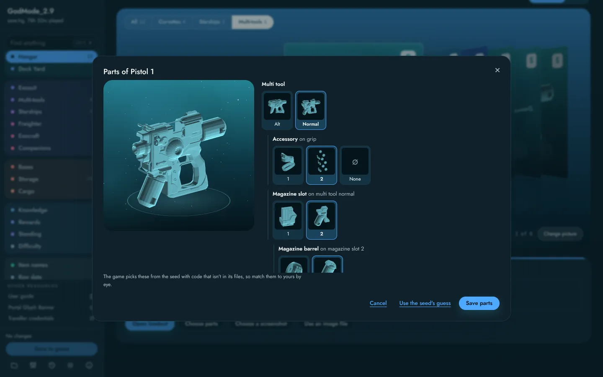
Grid view
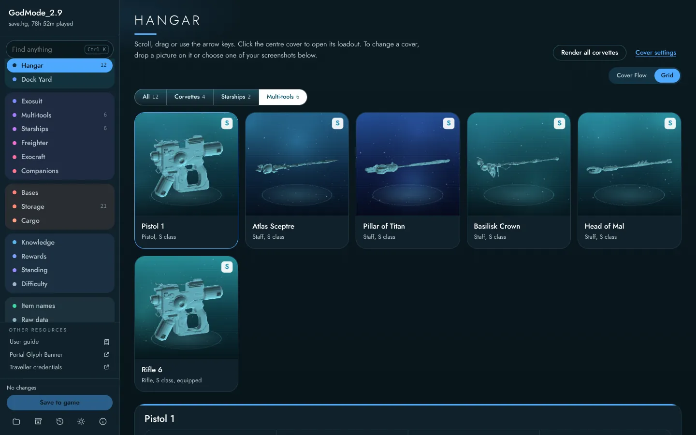
Dock Yard
Every ship you own, build or download, in one place. Keep every version and move ships and corvettes into any save.
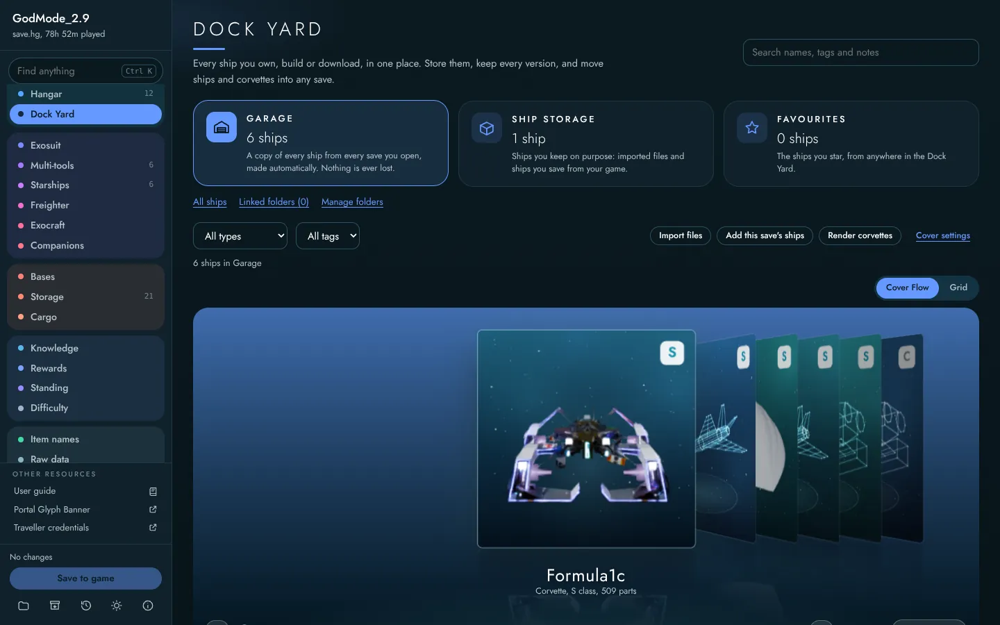
The Dock Yard lives in Documents\Harmonious Save Editor\Dock Yard, so it's shared by all your saves.
The three tabs
| Tab | What's in it |
|---|---|
| Garage | Fills itself. Every ship in every save you open is copied here, and a ship you replace is copied first, so nothing is lost. |
| Ship storage | Ships you keep on purpose: files you import and ships you save from your game. |
| Favourites | Ships you star, from anywhere in the Dock Yard. |
Under the tabs: All ships, Linked folders (folders where you already keep ship files; the app only reads them) and Manage folders.
Garage versions
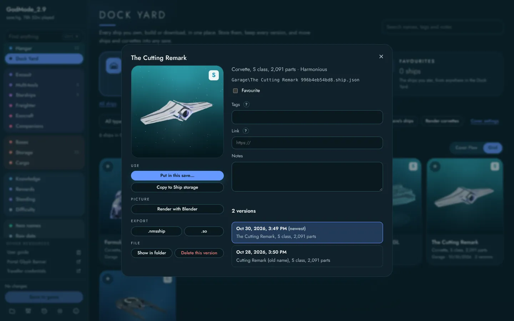
- A new version is kept only when the ship itself changes: its build, model, name, class, colours or installed tech. Fuel, charge, cargo and where it's parked don't count.
- Pick a version in the list to see it, put it in a save, export it or delete it.
- Copies of the same version (from older editor versions) show as "seen N times". Move them to Deleted clears them out.
Using a ship
- Put in this save… drops a ship into an empty slot or replaces one (the replaced ship goes to the Garage first). Corvettes bring their build.
- A build on its own (no ship) goes onto one of your corvettes, which keeps its name and class. A
.sofile does the opposite: a corvette takes its tech and class and keeps its build. - Copy to Ship storage, Render with Blender, and export as
.nmsshipor.sofor TAZ's tools. - Tags, notes, a link and a favourite star on every card. Get art from the link fetches the artwork, author and description from a listing page.
- Import files reads
.json,.txt,.nmsship,.soand Base Building App.nmsprefabfiles. Add this save's ships stores them all. - Delete moves files to the Dock Yard's Deleted folder, so they can always come back.
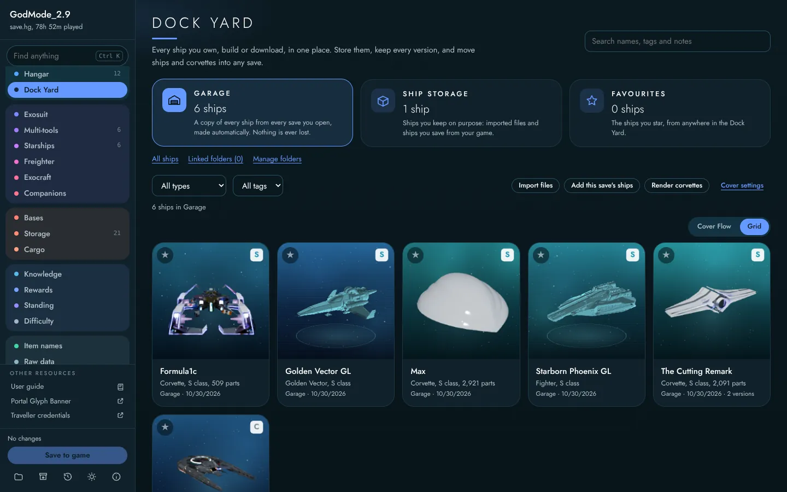
Exosuit
Your exosuit's technology and cargo, laid out exactly as the game shows them.
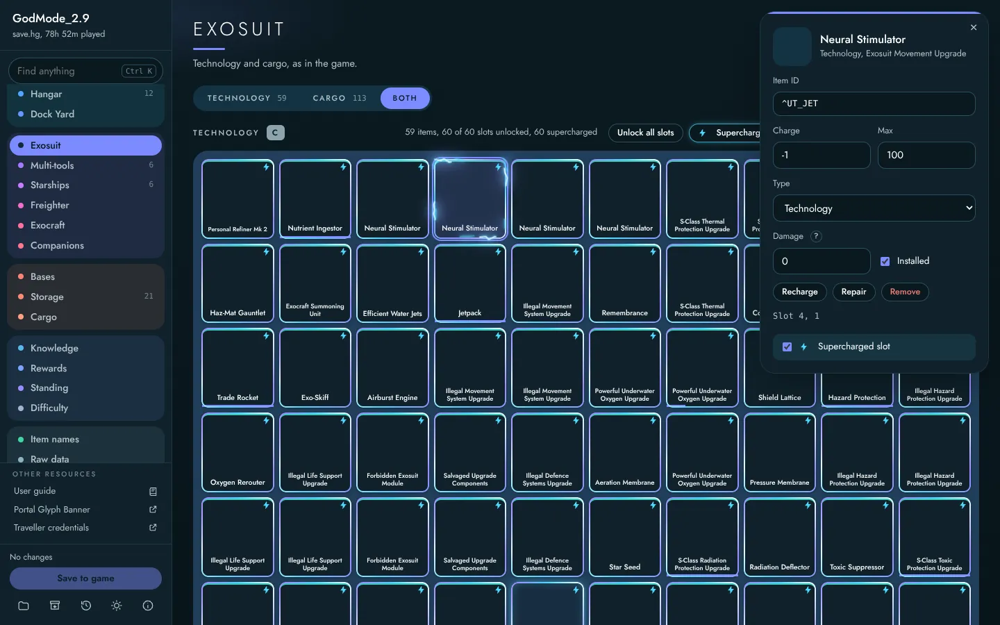
The exosuit uses all the inventory tools: Technology / Cargo / Both, unlocking slots, filling stacks, repairing, resizing and supercharged slots.
Multi-tools
Every multi-tool you own, its looks, stats and technology.
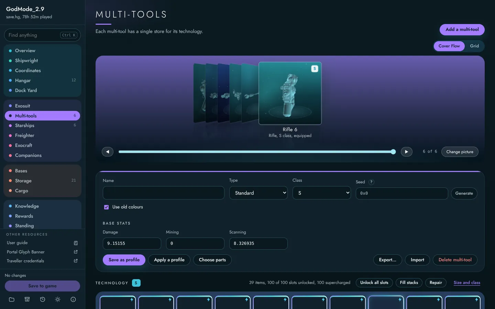
- Pick a multi-tool from the covers. The equipped one says so.
- Name, type (standard, royal, sentinel, atlas, staff and the rest), class, and seed, which decides its look. Generate rolls a new one.
- Use old colours, and base stats: damage, mining and scanning.
- Save as profile keeps the loadout as a file; Apply a profile puts one on any multi-tool. Profiles work across saves; share one by sending the file.
- Choose parts for the cover model, Export… a
.jsonbackup, Import, and Delete multi-tool. - Add a multi-tool in the top-right corner.
Starships
Rename ships, change their looks and class, arrange and repair ship slots, and manage each ship's inventories.
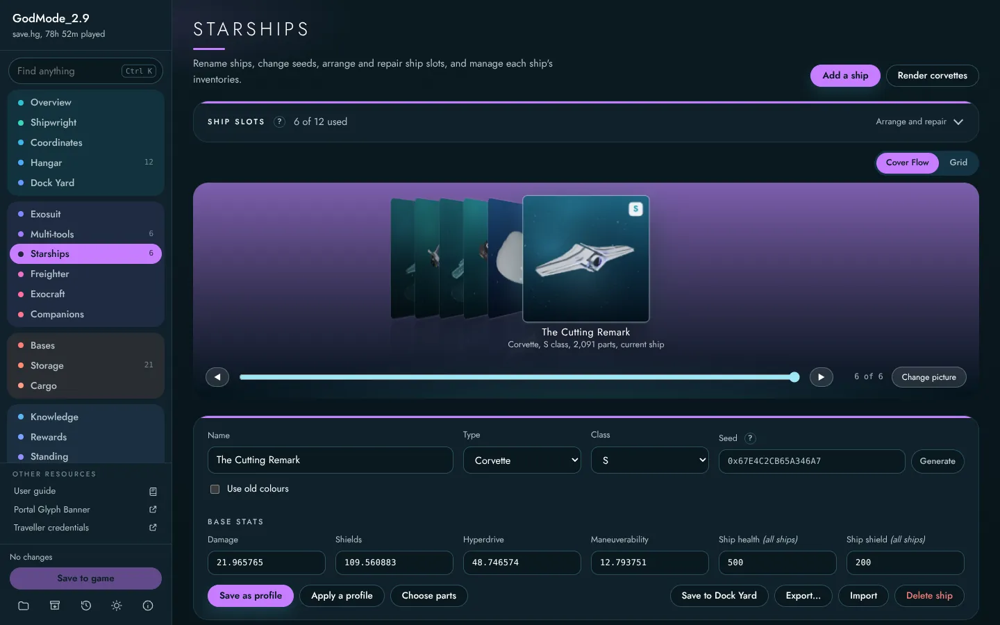
Ship slots
- Arrange: drag ships into a new order. Corvette builds, colours and your current ship move with them.
- Close the gaps moves ships up into empty slots.
- Problems and fixes: for example a corvette build pointing at the wrong slot. Fixes that delete something are listed last and marked.
Each ship
- Name, type (hauler, explorer, shuttle, fighter, exotic, living ship, solar, interceptor, corvette and the special ships), class, seed with Generate, and use old colours.
- Base stats: damage, shields, hyperdrive and maneuverability, plus ship health and shield (shared by all ships).
- Save as profile, Apply a profile, Choose parts, Save to Dock Yard.
- Export… as a
.jsonbackup, a.nmsship(whole corvette) or a.so(the ship entry, for TAZ's tools); Import; Delete ship.
Adding and archiving
- Add a ship: a new corvette, or a copy of one of your ships with its colours and build.
- Archived ships: the ships the game keeps in its archive. Restore one into a slot, or Archive a ship.
- Render corvettes makes Blender renders for the Hangar.
Freighter
Your capital ship, its inventories and its fleet of frigates.
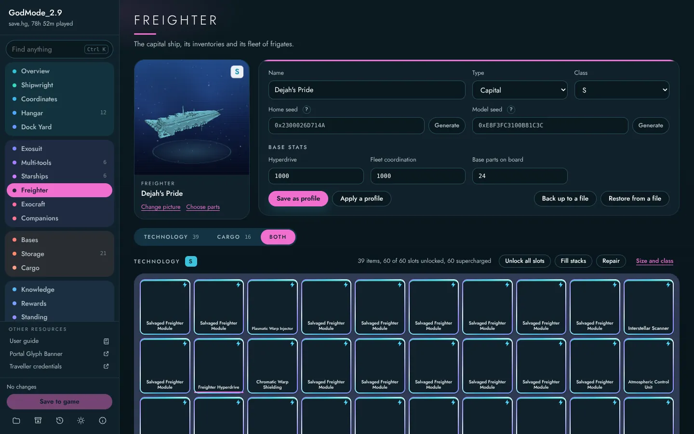
- Name, type (capital, regular, small, tiny, pirate dreadnought), class, home seed and model seed.
- Base stats: hyperdrive, fleet coordination, and how many base parts can go aboard.
- Save as profile, Apply a profile, Back up to a file and Restore from a file.
- Inventories: technology and cargo, with all the inventory tools.
Frigates
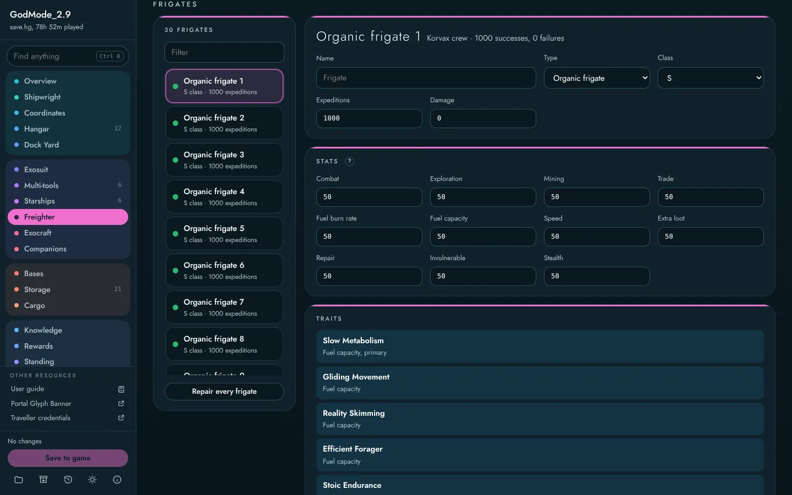
- Each frigate: name, type, class, expeditions and damage.
- Stats: combat, exploration, mining, trade, speed, fuel and the rest.
- Traits, named as in the game.
- Repair every frigate.
Exocraft
Cargo and technology for each exocraft you've summoned.
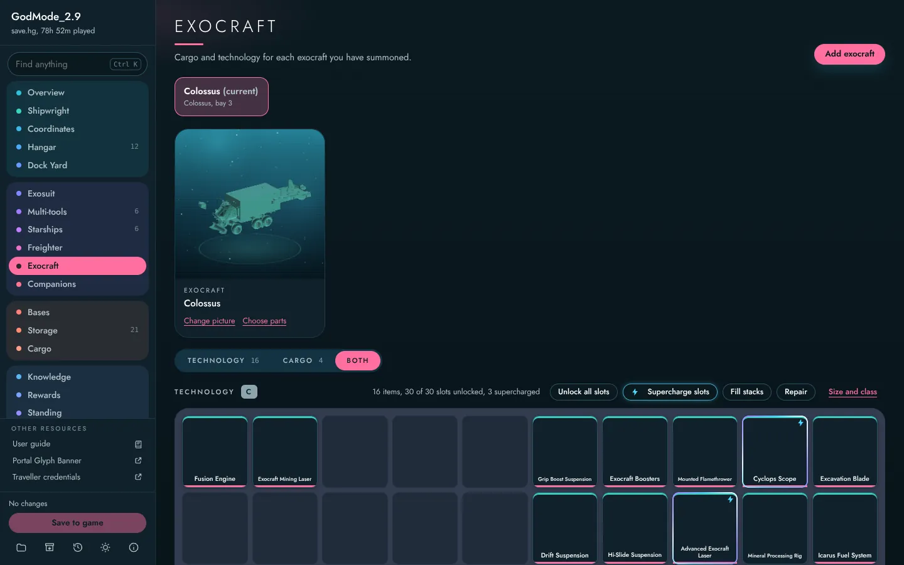
- Each exocraft (Roamer, Nomad, Colossus, Pilgrim, Nautilon, Minotaur…) with a model from your game.
- Technology and cargo with all the inventory tools, including supercharged slots.
- Add exocraft learns the geobay blueprints for the ones you don't have yet.
Companions
Your creature companions: names, size, trust, temperament and mood.
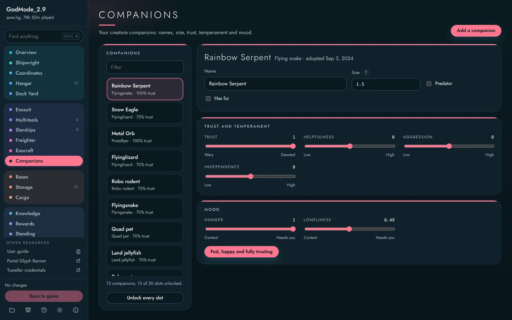
- Name, size, and whether it's a predator or has fur.
- Trust and temperament: trust, helpfulness, aggression and independence.
- Mood: hunger and loneliness.
- Fed, happy and fully trusting in one click.
- Add a companion and Unlock every slot.
Bases
Your bases and the settlements you run or have visited.
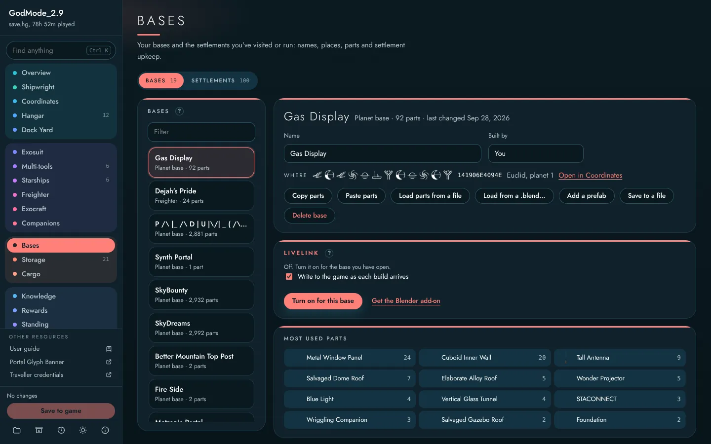
Bases
- Each base: name, type, part count, where it is (with Open in Coordinates) and who built it.
- Copy parts and Paste parts between bases, Load parts from a file, Save to a file.
- Add a prefab from the Base Building App (
.nmsprefab). - Load from a .blend… reads an NMS Base Builder file. LiveLink works for bases too. See Blender.
- Most used parts, and Delete base.
Settlements
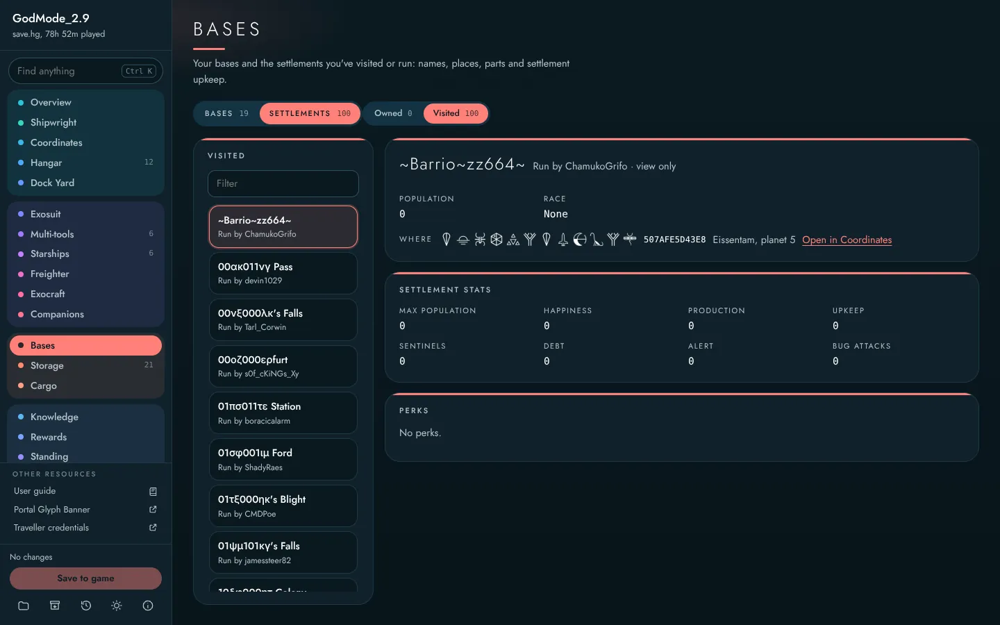
- Owned: settlements you run. Name, stats (population, happiness, production, upkeep, sentinels, debt, alerts and bug attacks), perks with Remove the negative perks, and Clear debt, alerts and bug attacks.
- Visited: settlements you've been to. They belong to other players, so they're shown but never changed.
Storage
Base storage containers and the other standalone inventories in the save.
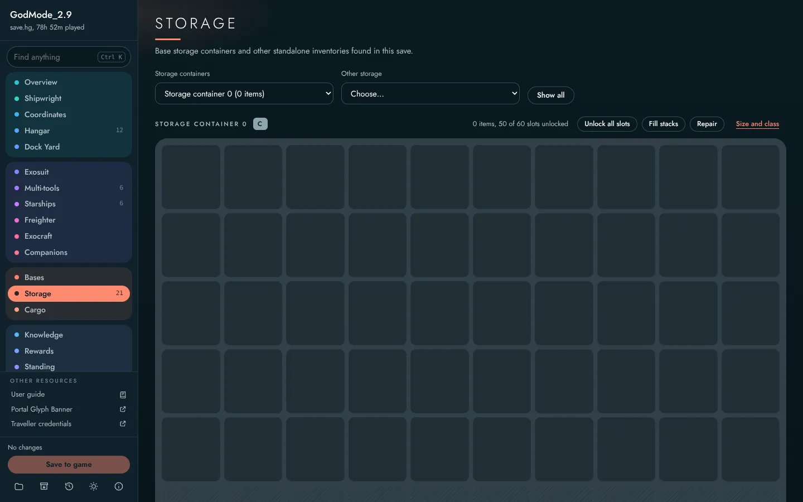
- Storage containers 0 to 9, and other storage (chests on bases, lockers and the rest), from the two lists at the top. Show all lists everything.
- Every container has the full set of inventory tools.
Cargo
Every stack in every inventory in one place: find where things are, gather them together, and tidy partial stacks.
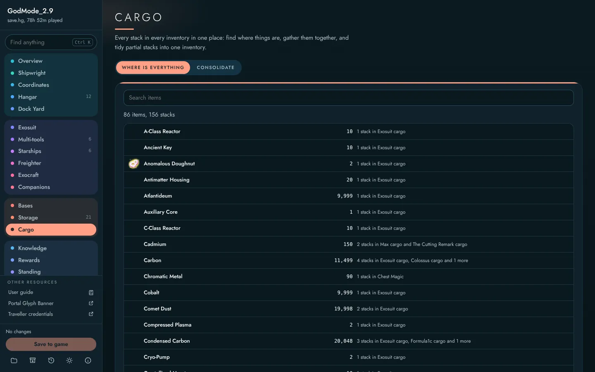
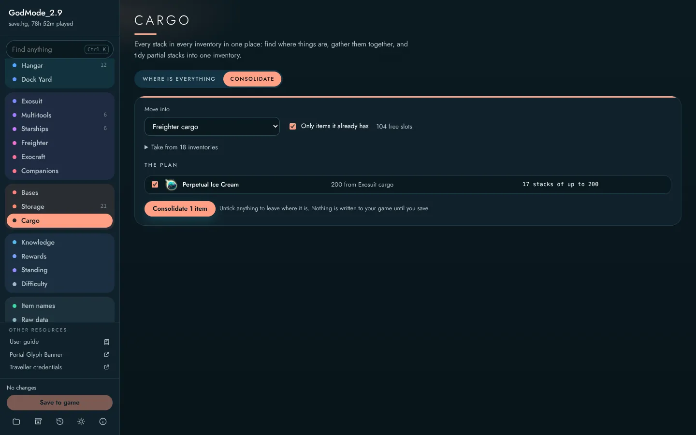
- Find any item across exosuit, ships, freighter, exocraft and storage.
- Consolidate: pick a destination, choose Only items it already has if you like, and untick anything to leave alone. Matching stacks are topped up first, then free slots are used, taking the smallest stacks first. Special lockers are left out unless you include them.
- Drag and drop stacks between any slots and inventories on any page. Technology always stays in its own inventory.
Knowledge
The blueprints you can build and the alien words you know.
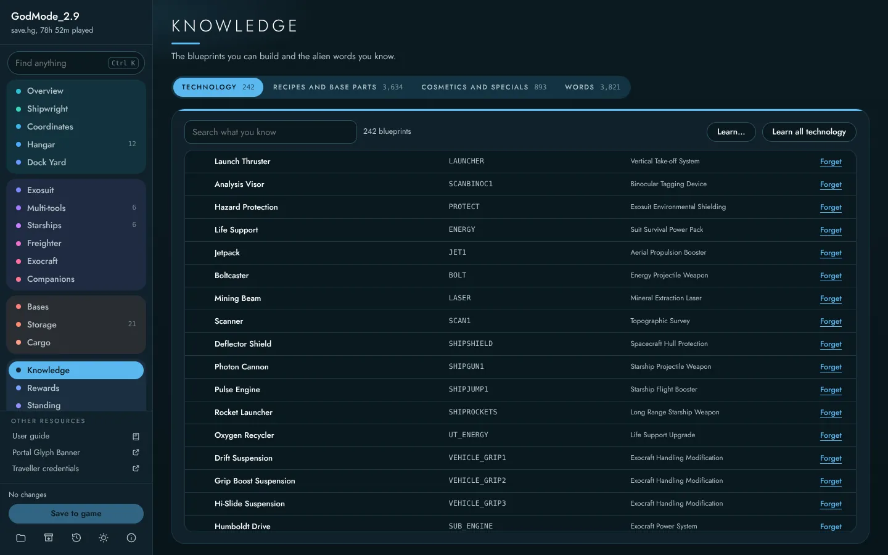
- Technology, recipes and base parts, and cosmetics and specials: search what you know, Learn… anything new, or Forget it.
- Learn all technology and Learn all base parts add everything your game lists that the save doesn't know yet.
- Words: how many you know for each race, word by word. Learn every word, every race, or all of one race's words.
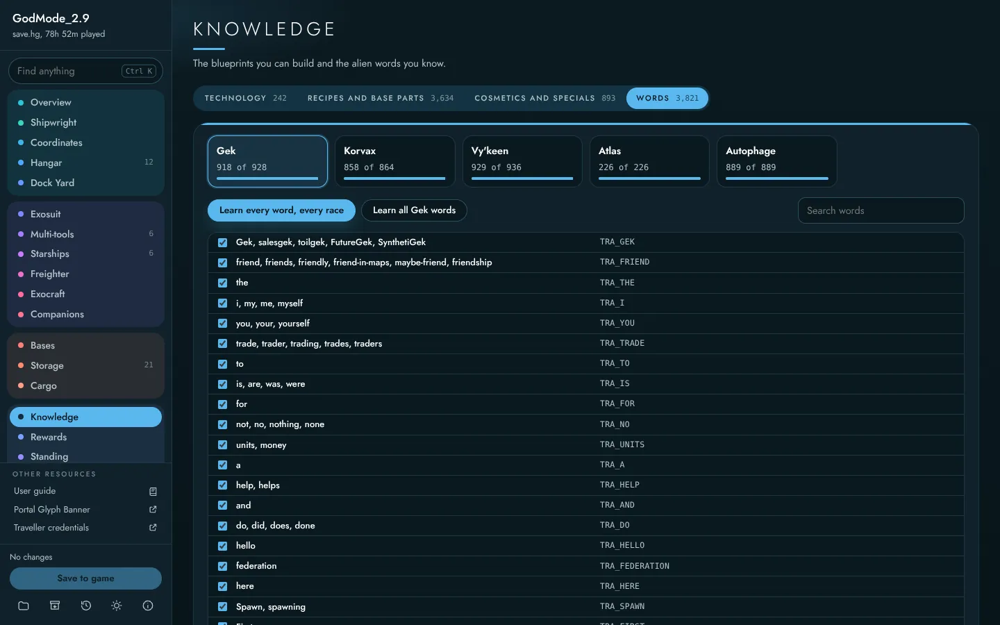
Rewards
Every expedition reward, past and current, plus Twitch drops and platform rewards.
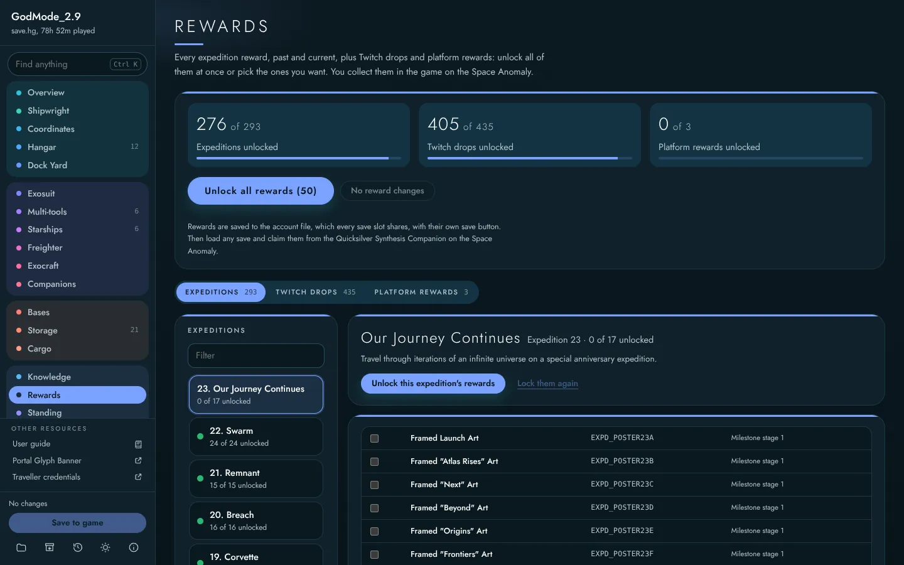
- Expeditions, newest first, with how many of each one's rewards you have. Unlock this expedition's rewards, or tick single rewards.
- Twitch drops and platform rewards in their own tabs.
- Unlock all rewards does everything at once.
Standing
Your reputation with each race and guild, and the journey milestones the game counts.
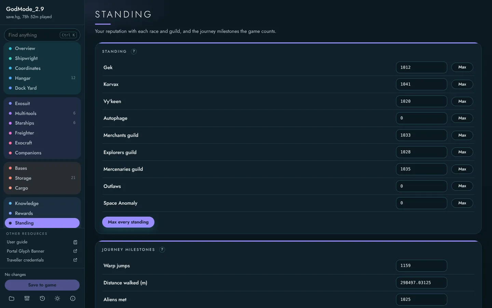
- Standing with the Gek, Korvax and Vy'keen, the guilds, outlaws and the Space Anomaly, with the game's rank names. Max on each, or Max every standing.
- Journey milestones: warps, distance walked, aliens met, words learned and the rest.
Difficulty
The game's difficulty settings, the same ones as its options menu, including those it only lets you pick when starting a new game.
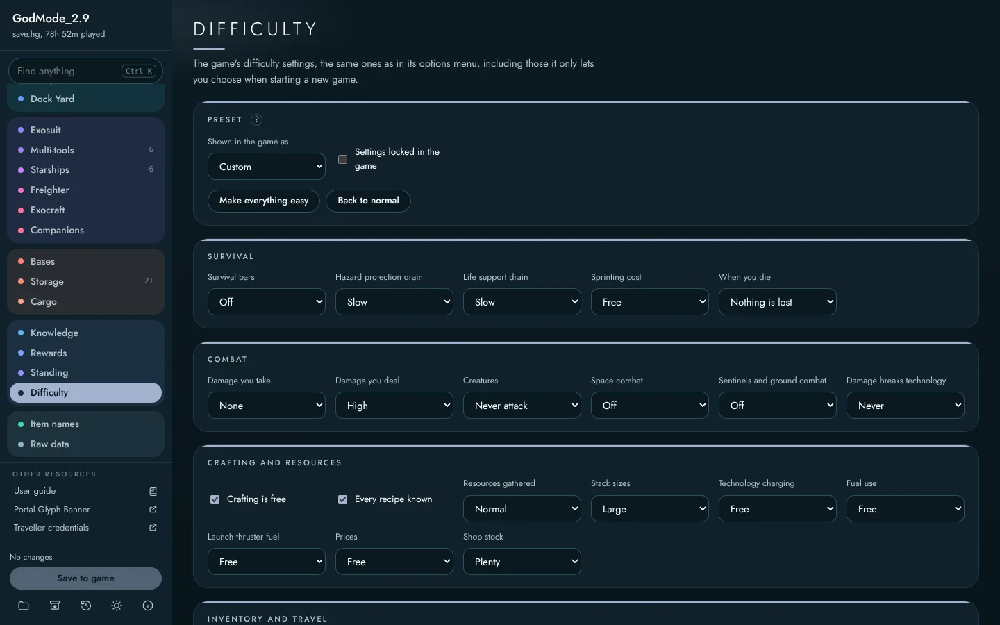
- Preset, and whether settings are locked in the game.
- Survival, combat, crafting and resources, inventory and travel: every setting, with the game's own choices.
- Make everything easy and Back to normal set them all at once.
Item names
Where item names, icons and descriptions come from: your own copy of the game.
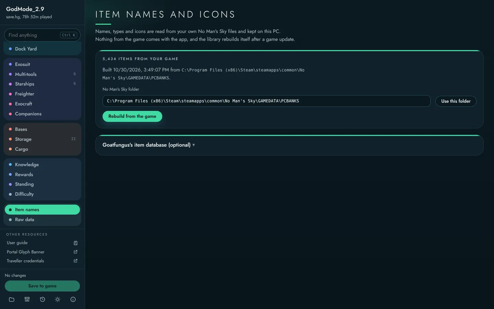
- The item library is built from your No Man's Sky files the first time the app starts, kept on your PC, and rebuilt after game updates. Nothing from the game comes with the editor.
- If Steam doesn't find the game, paste its folder (the one with
GAMEDATA) and press Use this folder, then Rebuild from the game. - Goatfungus's item database (
NMSSaveEditor.jar) works as a stand-in until your library is built. Search this PC for it finds it.
Raw data
Every value in the save, for when no other page has what you need.
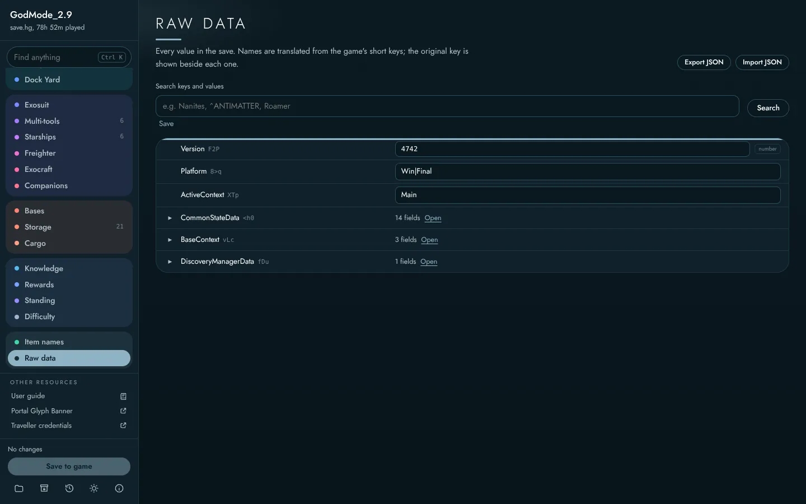
- Readable names for the game's short keys, with the original key beside each one.
- Search keys and values, open any branch, and edit any value.
- Export JSON and Import JSON for the whole save.
Inventories and find
Tools that work the same on every page.
Inventory grids
- Technology / Cargo / Both: the game's own inventories in the game's order, with icons, names and amounts. The grid keeps the game's columns, since slot position matters for adjacency bonuses.
- Click a slot to change the amount, replace the item, repair or recharge it, or remove it. Add to slot puts any item from the library into an empty slot.
- Drag and drop stacks. Drag a box across the grid from an empty slot to select several and move them together.
- Unlock all slots, Fill stacks, Repair, and Size and class to resize the inventory or change its class.
- Supercharge slots on exosuit, starship and exocraft technology. Supercharged slots get a steady border; the arcs only move when you point at them.
Find anything
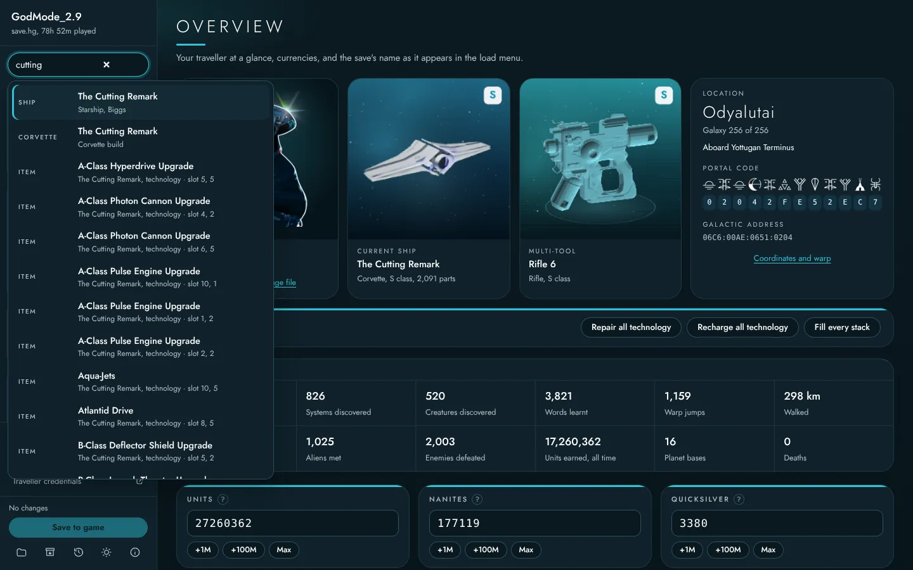
Press Ctrl K, or click the box at the top of the sidebar, and type. Results cover ships, multi-tools, bases, frigates, companions, settings, pages and every item in your inventories. Pick one to jump straight to it.
Light and dark
The sun or moon button at the bottom of the sidebar switches the look. By default the editor follows your Windows setting.
Blender
Real corvette renders, builds read straight from .blend files, and LiveLink: save in Blender, and the build is in your save.
What you need
- Blender 4.2 or newer.
- For corvettes: Charon Forge, installed as a Blender extension.
- For bases: NMS Base Builder.
The editor finds them on your PC. If it doesn't, open Cover settings (on the Hangar or the Dock Yard) and point it at Blender.
Corvette renders
- Render all corvettes on the Hangar, Render corvettes in the Dock Yard and on Starships, or Render again for one.
- Renders are kept on your PC by build, so a build is only rendered once.
- Automatic renders (Cover settings): a few seconds after a save opens, corvettes without a picture are rendered one at a time.
- Render the other angles adds front, side, back and top views, picked under the cover.
Load from a .blend
Load from a .blend… on Shipwright (corvettes) or Bases reads the build from a .blend file, without you opening Blender. The editor works out which corvette or base the file is for, asks before changing it, and remembers the file for LiveLink.
LiveLink
- On Shipwright (or Bases), press Get the Blender add-on and install it in Blender (Edit, Preferences, Add-ons, Install from disk).
- Pick a corvette or base and press Turn on for this corvette. The editor offers to open the
.blendit was last built from (Open in Blender), or Choose another. - In Blender, the 3D view's sidebar has a Harmonious tab that shows the link. Set which corvette or base the file is for.
- Build. Each time you save the file (or press Send now), the build goes into your save. The editor backs up the save each time, and a card at the top of its window says what arrived.
Close No Man's Sky before LiveLink writes, and reload the save in the game to see the result.
Browser version
nms-save-editor.html is the same editor as a single web page for Chrome or Edge, for when you can't run the desktop app.
- Folder mode: choose your
NMSfolder or thest_…folder inside it. Saving keeps a copy of the old pair in_editor_backupsfirst. Chrome won't open AppData from a web page, so you may need to copy the folder somewhere else first. - File mode: drop both files (
saveN.hgandmf_saveN.hg). The edited pair downloads, and you copy it back. - Not in the browser: the Dock Yard, renders, LiveLink and reading your game's files. For item names it uses Goatfungus's
NMSSaveEditor.jar.
Questions
Answers to the things people ask most.
- Windows says the app might be unsafe.
- The program isn't code-signed, so SmartScreen warns once. Choose More info, then Run anyway. The source is public on GitHub.
- My change didn't show up in the game.
- Close the game before saving, then load the save again. If Steam Cloud put an older copy back, let it finish syncing first, or choose the local files when it asks.
- How do I undo a save?
- Every save makes a backup first. See Getting an old save back.
- Item names show as codes, or icons are missing.
- The item library hasn't been built yet, or couldn't find the game. Open Item names, check the game folder and press Rebuild from the game.
- A corvette has no picture.
- Without Blender, corvettes show a hologram of their parts. Install Blender and Charon Forge for real renders (see Blender).
- Can I move a ship from one save to another?
- Yes. Every ship from every save you open is in the Dock Yard's Garage. Open the other save, find the ship and press Put in this save….
- Does the editor need the internet?
- No. It only goes online to check for updates, to fetch art from a listing link when you ask, and for links you click.
- Is it safe for my account?
- The editor only changes your own save files on your PC. Edits that make a save impossible in normal play (such as unlocking things) are your choice; keep backups if you play online with others.
Links and credits
Pastullio the Harmonious
Other tools
Built on the work of
- libNOM.map and libNOM.io by zencq: save keys and format
- MBINCompiler by monkeyman192 and contributors: game table layouts
- HGPAKtool by monkeyman192: game archive format
- Charon Forge by xX-Charon-Xx: corvette renders and builds from Blender
- TAZmd's corvette optimizer notes: the part order the game reads
- nms_namegen by Stuart Coyle, hadsh and GoodGuysFree, and its port nms-core by elegra1965: system and planet prediction
- Pillow (texture decoding), klauspost/compress, and the Jost typeface by indestructible type*
Free software under GPL-3.0. Not affiliated with Hello Games.